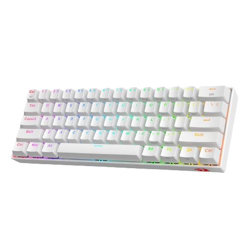
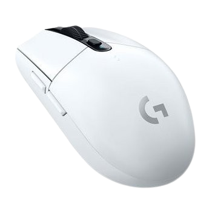
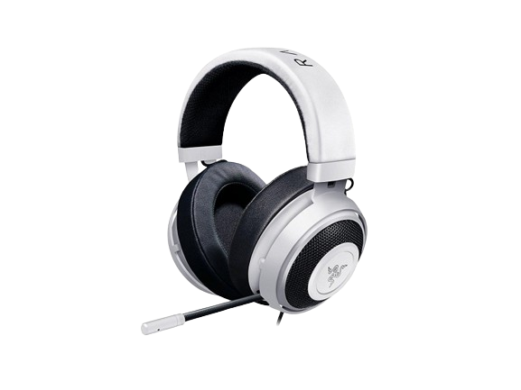

Witaj!
Recenzja mojego stanowiska.
A więc tak...

Klawiatura Redragon Draconic K530W
Klawiatura ta, kosztuje około 250/300 złoty, więc niedużo.
Posiada ona Hot-Swappable Red i Brown Switche, więc jest dość cichą klawiaturą.
Posiada ona Hot-Swappable Red i Brown Switche, więc jest dość cichą klawiaturą.
Plusy:
- Darmowy Software
- Bezprzewodowa (Bluetooth)
- Nieduża cena
- Długo trzyma na baterii
Minusy:
- Ciężko ją wyczyścić
- Łatwo się brudzi
- Dość ubogi Software
- Ma lekko za ciemne podświetlenie (według mnie)

Myszka ta posiada zakres DPI od 200 do aż 12000 DPI!
Posiada sensor HERO, waży tylko 99 gram, więc niedużo, ma długość 11.66 cm, wysokość 3.82 cm, i szerokość 6.215 cm.
Cena to około 200 złoty.
Posiada sensor HERO, waży tylko 99 gram, więc niedużo, ma długość 11.66 cm, wysokość 3.82 cm, i szerokość 6.215 cm.
Cena to około 200 złoty.
Plusy:
- Dosyć mała
- Bezprzewodowa
- Bardzo dobry sensor
- Lekkie kliknięcia
- Software
Minusy:
- Do Minecraft'a może być słaba, ponieważ nie wyłapuję szybkich kilkukrotnych kliknięć
- Na baterię
- Niektórym może być niewygodna
- Brak podświetlenia, co niektórym może się nie spodobać
- Myszka niezawsze powiadamia, że się rozładowywuje.

Słuchawki posiadają chowany mikrofon o przenoszeniu 100~10000 Hz.
Czułość słuchawek to 118 dB, więc nie są najgłośniejsze. Impedancja słuchawek to 32Ω.
Posiada kabel o długości 1,3 metra oraz membrane o średnicy 50mm.
Waga to 322g.
Cena to od 250 do 300 złoty.
Czułość słuchawek to 118 dB, więc nie są najgłośniejsze. Impedancja słuchawek to 32Ω.
Posiada kabel o długości 1,3 metra oraz membrane o średnicy 50mm.
Waga to 322g.
Cena to od 250 do 300 złoty.
Plusy:
- Mają dość dobry bass.
- Świetnie wygłuszają.
- Bardzo wygodne.
- Posiadają chowany mikrofon.
- Bardzo wytrzymałe.
Minusy:
- Brak Software'u.
- Dość ciche.
- Słaba jakość mikrofonu.
- Krótki kabel.
- Słaby stosunek Jakość/Cena.